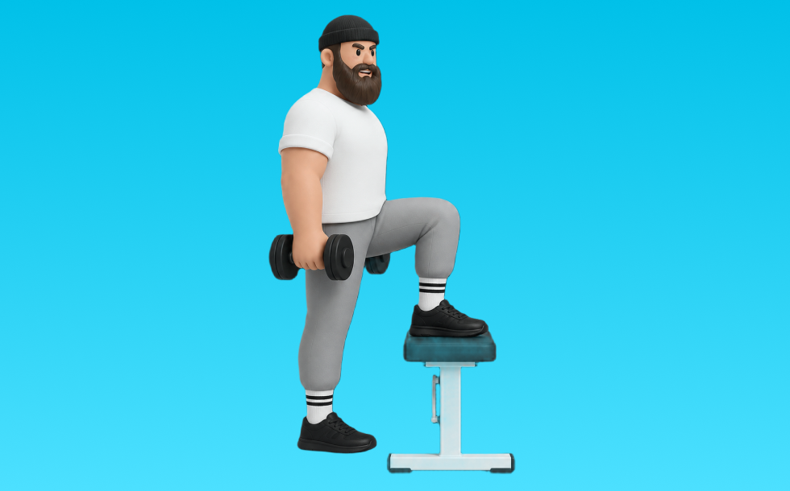

ダンベルステップアップ

ダンベルステップアップとは、ダンベルを使って「踏み台に上がる」動作でお尻（臀筋）、脚（大腿四頭筋）を鍛える種目です。左右のバランスを整えやすいのが特徴で、反動を抑えてコントロールしながら反復します。下半身の筋力・筋量アップが期待できます。
- 対象部位
- 脚
- 器具
- ダンベル
- 記録形式
- 重量・回数
- 別名
- DBステップアップ / ダンベル台昇り
YouTube動画
-
コアと足腰を凄く強くするステップアップ[Core Workout]
-
【自宅筋トレ】ダンベルを使って上半身６分間です。ペットボトルorなしでも効きます。肩こり、腰痛改善にもおすすめです。
-
【筋トレ】自重からダンベル種目にステップアップ！重量や回数について
YouTubeショート
-
正しいステップアップやり方#shorts #ダイエット
-
ステップアップ（ダンベル）
-
【ダンベルを使ったステップアップの正しいやり方】高みへの一歩が、下半身の裏側に効く｜Training Movie 100｜Tarzan Web
-
ダンベルステップアップ
-
ステップアップ（ダンベル使用）
-
本物の懸垂とは？米海兵隊が教える正しいフォーム 😎 #懸垂 #米海兵隊 #筋トレ #軍事訓練 #ショート雑学 #shorts
-
ジムあるある、最初みんなつまずくよねw #shorts
-
【ダンベル】脚トレ３選
-
【大臀筋を鍛える！】ダンベルステップアップ
-
【ステップアップの正しいやり方】 いつもの筋トレをステップアップ！｜Training Movie 100｜Tarzan Web
-
【忙しい人向け】30分で終わる脚トレ#shorts #youtubeshorts #筋トレ大学 #筋トレ #脚トレ
-
正しいルーマニアンデッドリフト4つのポイント #筋トレ
-
脚トレはランジ。#脚トレ #トレーニング #ジム #脚痩せ #ダイエット #フィジーク #筋トレ
-
ステップアップランジで太ももがバキバキに絞れるよ
-
懸垂が劇的に軽くなる「背中の連動」3ステップ #筋トレ #懸垂 #背中トレ
-
正しい懸垂5つのポイント【筋トレ】
-
正しい腕立て伏せ3つのポイント #筋トレ
-
ステップ ジャンプ ダンベル
-
【ルーマニアンデッドリフト】#ヒップアップ #training #shorts
-
デッドリフトの正しいやり方 #フィットネス #筋トレ #デッドリフト
-
正しいダンベルステップランジのやり方
-
正しいブルガリアンスクワット4つのポイント #筋トレ
-
肩トレ迷ったらこの3つ！ダンベルでできるトレ
-
ミニマリスト脚トレ3種目を紹介 #フィットネス #筋トレ
-
【初心者でも安心】簡単！脚トレ4選 #筋トレ #脚トレ#ダイエット#ボディビル #shorts
-
ベンチプレスの正しいやり方を紹介 #筋トレ #フィットネス
-
Step-up Tips
-
【ベンチプレス】背中に力を伝えるブリッジ強化法 #筋トレ #レッグドライブ
-
ランジの正しいフォーム#shorts
-
【ダンベル】下半身トレ５選
-
【ベンチプレス100kgあげる河野玄斗】 #shorts #河野玄斗 #study #筋トレ
-
ジャンプ力をこう上げました。 #ジャンプ力 #バレーボール #バレーボール男子
-
パンチ力5倍アップ方法#ボクシング #格闘技
-
【体幹】【股関節】10回するだけで別人の体幹を作れる最強トレーニング！
-
【腰痛】【肩痛】になるアブローラーのフォームはこの3つが原因です。 #パーソナルトレーナー #筋トレ #アブローラー #腹筋ローラー
-
ベンチプレス40kgから最短で100kgに伸ばす方法
-
【山本式】懸垂ができない人のための完全解説#shorts #youtubeshorts #筋トレ #懸垂 #背中トレ #筋トレ初心者 #筋トレ大学 #筋肉博士
動作方法
- 足幅を決め、体幹を固める
- 股関節と膝を同時に曲げて下ろす
- 足裏全体で床を押して立ち上がる
動作ポイント
- 膝とつま先の向きをそろえる
- 胸を落としすぎない
- かかとを浮かせない
ワンポイントアドバイス
- ウォームアップで股関節と足首を動かす
- 高重量の日はセーフティ設定を確認する
目的別回数設定
目的や体力に応じた一般的な目安です。無理のない範囲で調整してください。
- 筋力アップ
- 1〜5回
- 筋肥大
- 6〜12回
- 持久力アップ
- 13〜20回
YouTube動画について
動画はYouTubeの公開情報をもとに表示しています。内容は投稿者によるもので、Biggrによる監修ではありません。
アプリを入手
筋トレやトレーニングの記録はBiggrにお任せください。今すぐ無料で使い始められます。